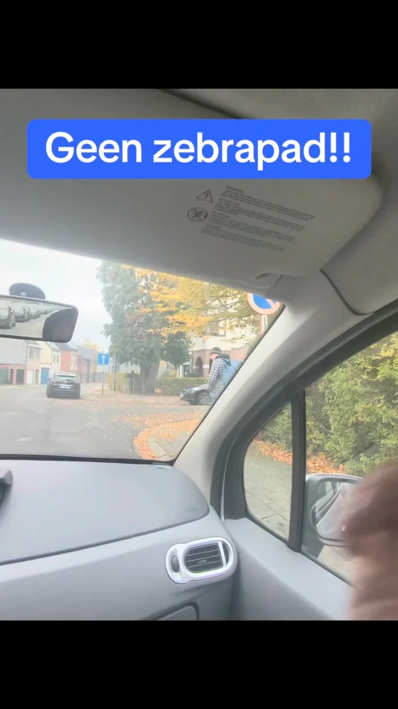
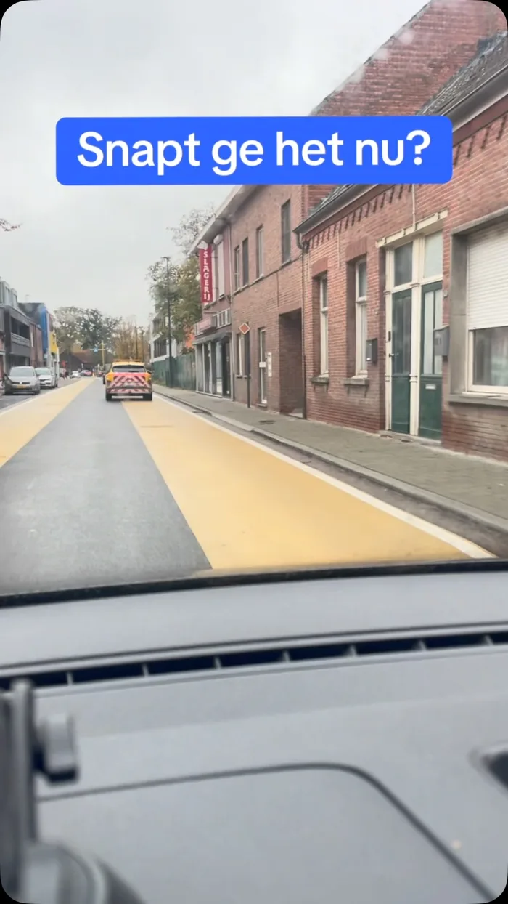
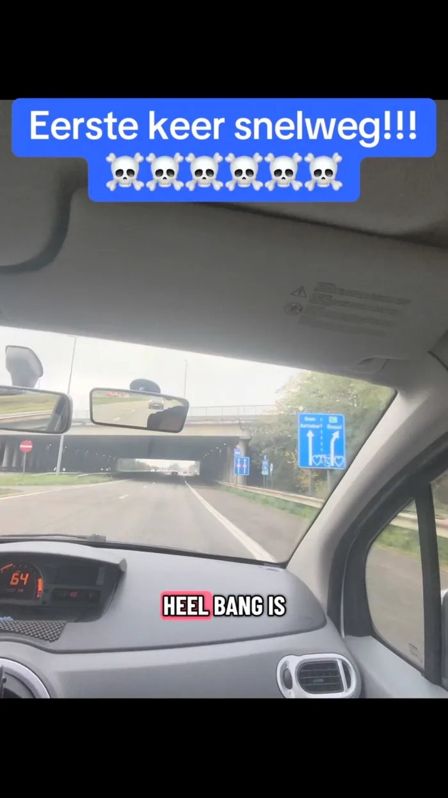
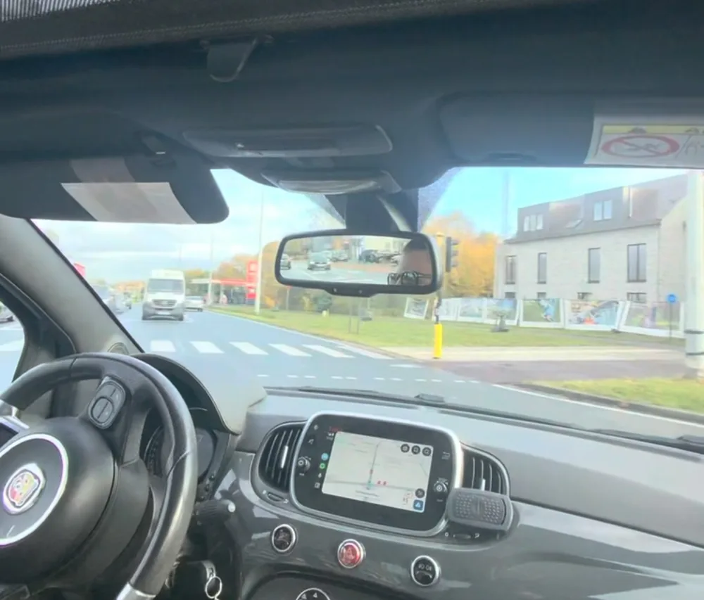
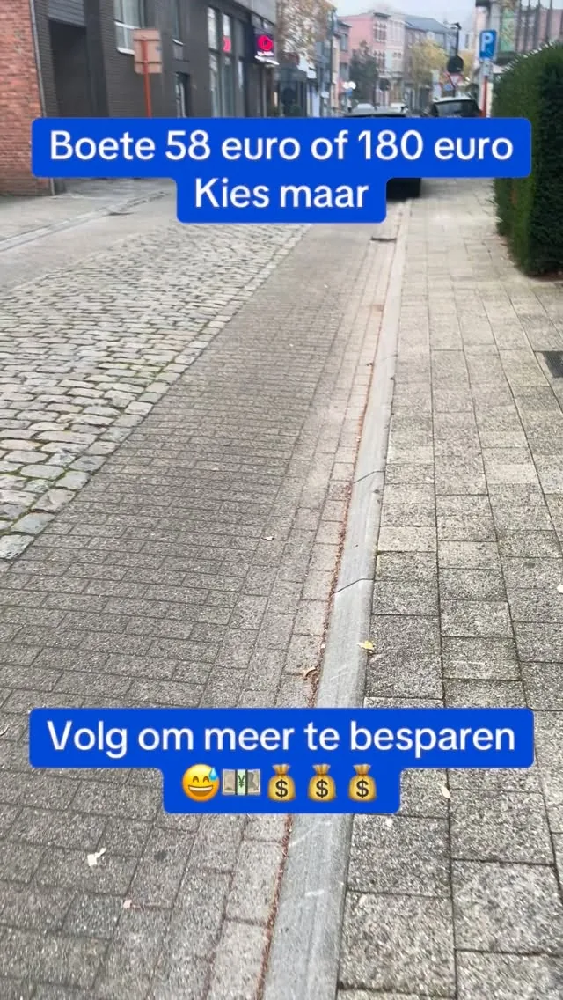
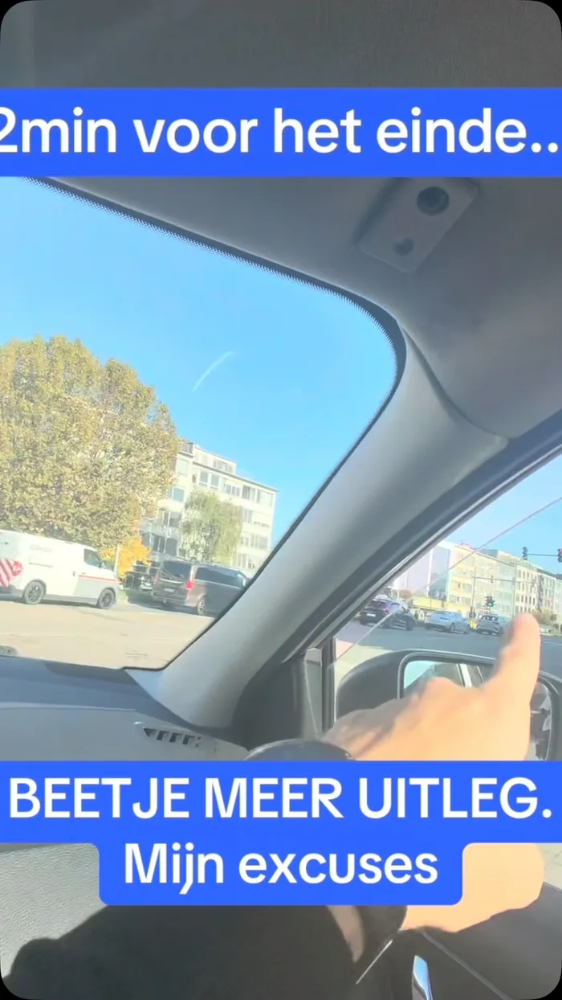
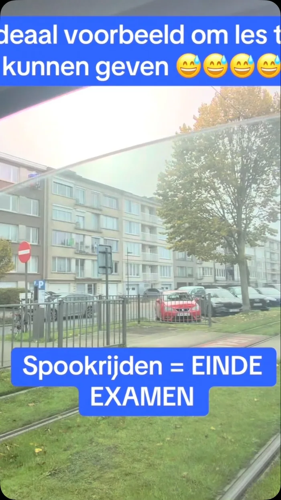
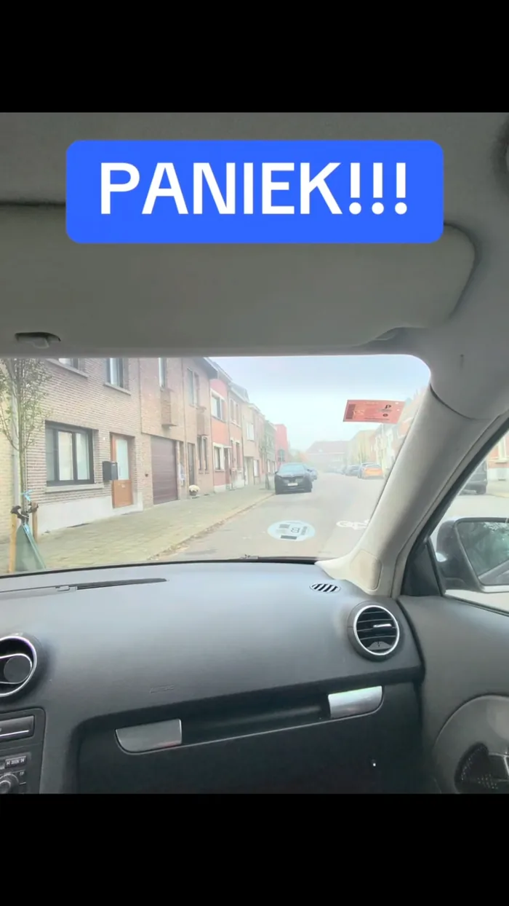
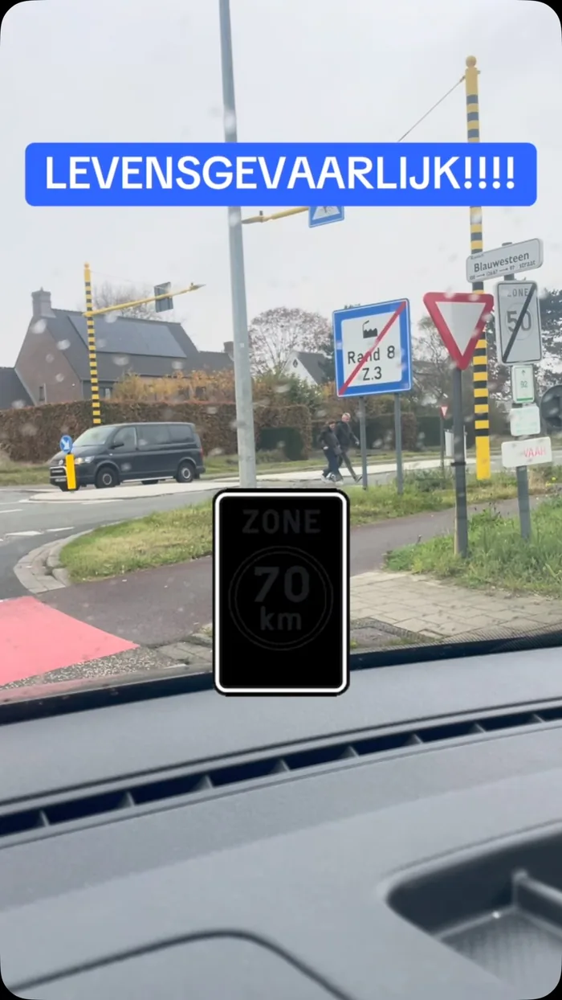

Spoedcursus examenroutes
€ 1002 uurAlle moeilijke kruispunten en routes van jouw examencentrum.
Je lesgever was meer dan vijf jaar examinator. Hij weet precies waar het op het examen misloopt, en oefent dat met jou tot het vanzelf gaat.



Bij RijExpert krijg je les van een gebrevetteerde lesgever die meer dan vijf jaar zelf examens afnam. Hij weet waar examinatoren op letten, en leert je alles wat je moet kennen om te slagen voor je praktische en theoretische examen.
Je rijdt met je eigen wagen, in Deurne, Kontich of Sint-Niklaas. Zo ken je het parcours al voor je examen begint.
Alle moeilijke kruispunten en routes van jouw examencentrum.
Vakparkeren, fileparkeren, keren en de autosnelweg op.
Geen gestresseerde papa naast je, wel iemand die het examen kent. Zonder les: € 100.
Ongevallen herkennen en vermijden, op jouw tempo.

Vanuit de lesauto, elke dag op TikTokTwijfel je welke cursus je nodig hebt? Stuur je examendatum, dan zeggen we het je.
Stuur een berichtEen les voor wie zekerder wil rijden in het dagelijkse verkeer, ook na het examen.
158 reviews op Google. Streng maar rechtvaardig, dat lees je er vaak in terug.
"Vandaag geslaagd voor mijn praktijkexamen dankzij Rijexpert! Heb een spoedcursus gevolgd en hij heeft me echt enorm geholpen. Alles werd duidelijk uitgelegd, vooral de manoeuvres."
"Ik heb hier mijn spoedcursus gevolgd en ben ontzettend tevreden over de begeleiding en gouden tips die mij super hard hebben geholpen."
"Beste rijinstructeur van Vlaanderen! Enkele uren met Abdel en je kan je examen met gemak behalen."
Je rijdt altijd met je eigen voertuig. Zo oefen je meteen in de wagen waarmee je examen doet.
Laat via WhatsApp of mail weten wanneer en waar je examen aflegt.
Twee uur op de echte route, met alle kruispunten en manoeuvres die je moet kennen.
Op de dag zelf rijd je je in met een uur les en overlopen we alles nog eens.
Van de lastigste voorrangsregels tot de fouten die je examen kosten. Duizenden leerlingen leren elke dag mee vanuit de lesauto.




Met je eigen voertuig. Zo oefen je in de wagen waarmee je ook examen doet.
Op de examenroutes van Deurne, Kontich en Sint-Niklaas. De examenbegeleiding gebeurt in jouw examencentrum.
Examenbegeleiding kan alleen na een spoedcursus. Het uur les als opwarming is wel optioneel.
Stuur een WhatsApp of mail met de datum en de plaats van je examen. Dan plannen we samen je les.
Stuur een berichtje met je examendatum en je examencentrum. Dan plannen we samen je les.

Ik maakte deze demo voor jullie om te tonen wat er kan. Na een kort gesprek maak ik er iets veel persoonlijkers van, helemaal naar jullie wens.
Vrijblijvend. Ik kom langs of we bellen.
Op maat, op jullie eigen domein.
Geen voorschot. Jullie betalen pas als alles klaar is.
Hosting, domeinnaam en kleine wijzigingen, zoals nieuwe openingsuren.
Omdat een voorbeeld meer zegt dan een mail. Zo zien jullie meteen wat er kan, en het kost jullie niets.
Nee. Het gesprek is vrijblijvend. Vinden jullie het niks, dan is het daarmee gedaan.
Na ons gesprek staat jullie site binnen 10 tot 14 dagen online.
Zeker. Jullie domeinnaam kan gewoon blijven, de nieuwe site komt in de plaats van de oude.
Nee, dat doe ik op basis van ons gesprek. Eigen foto's zijn mooi meegenomen, maar niet nodig om te starten.